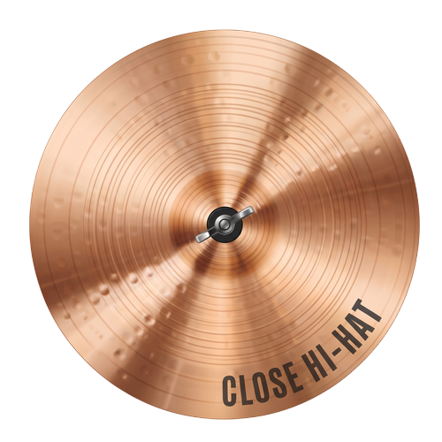
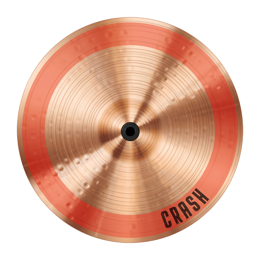
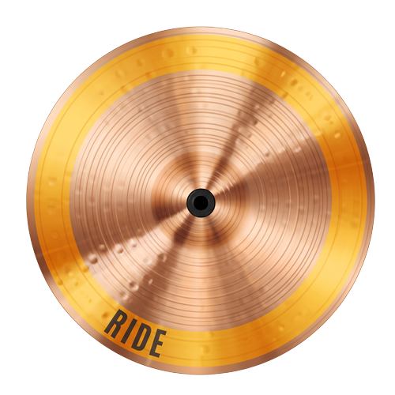
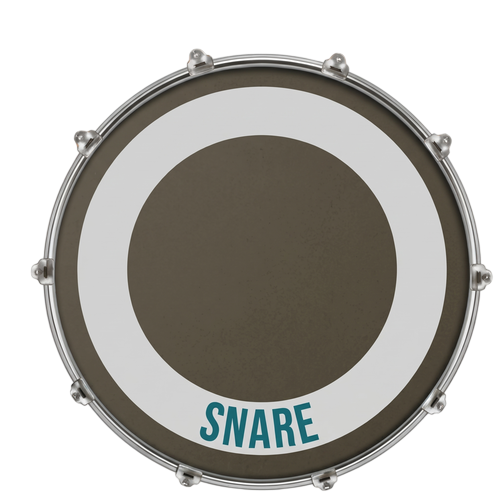
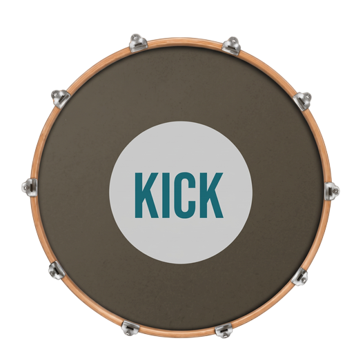

แตะแป้นกลองบนหน้าจอ หรือกดคีย์บอร์ด A S D F J K





| ประเด็นการประเมิน | เริ่มต้น (1) | กำลังพัฒนา (2) | สามารถ (3) | เหนือความคาดหวัง (4) |
|---|---|---|---|---|
| 1. จังหวะและความสม่ำเสมอ | ตีไม่ตรงจังหวะ จังหวะรวนตลอดเพลง | ตีตรงจังหวะ แต่มีคร่อม/ตกจังหวะ 3-8 จุด | ตีตรงจังหวะสม่ำเสมอ มีหลุดไม่เกิน 2 จุด | ตีตรงจังหวะ สม่ำเสมอตลอดทั้งเพลง |
| 2. เทคนิคและน้ำหนักการตี | น้ำหนักการตีไม่เหมาะสม จับไม้ผิดวิธี | ควบคุมน้ำหนักได้บ้าง มีผิดพลาด 3-8 จุด | น้ำหนักและท่าทางถูกต้อง มีผิดบ้างไม่เกิน 2 จุด | น้ำหนักการตีและท่าทางถูกต้อง สมบูรณ์แบบ |
| 3. รูปแบบจังหวะและการส่ง (Fill-in) | ส่งจังหวะไม่ได้ หรือตีผิดรูปแบบเพลง | ส่งจังหวะได้ แต่สะดุดล้มจังหวะบ่อยครั้ง | ส่งจังหวะได้ดี ลื่นไหล มีสะดุดบ้างเล็กน้อย | ตี Pattern ตรงสไตล์เพลง และส่งจังหวะได้อย่างแม่นยำ |